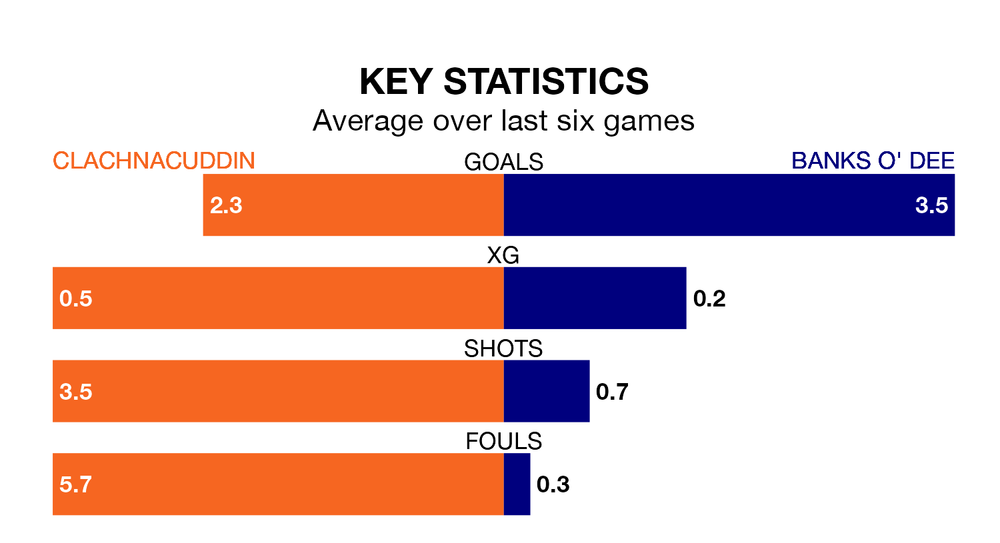

Relegation candidates Clachnacuddin face a challenge against high-flying Banks O' Dee at Grant Street Park on Saturday.
Clachnacuddin are 17th in the Highland Football League table, and have picked up just two wins and six draws in their 24 games to date.
Banks O' Dee, meanwhile, are second in the standings with 54 points, having won 16 and drawn six of their first 23 matches, and are one point behind table-toppers Brechin City.
With 66 goals in 23 games so far this season, Banks O' Dee are the league's highest scorers with 2.9 goals per game. And they are conceding fewer than average, letting in 20 goals at a rate of 0.9 per game.
Clachnacuddin, meanwhile, are below average scorers, with 1.4 goals per game, compared to a league average of 1.9. They have conceded 3.0 goals per game.
The home side are in bad form in the Highland Football League, with one win and a draw from their last six games.
With six wins and no losses over that period, the visitors' form is much better – they have taken 18 points from 18, compared to Clachnacuddin's four.
In the last three years, Clachnacuddin and Banks O' Dee have played each other on three occasions. They won one each, and they drew once.
Their last meeting was on October 7, when they played out a 2-2 draw.
Clachnacuddin's last match was on February 7, a 4-1 loss against Forres Mechanics.
Banks O' Dee beat Rothes 4-0 last time out, on Wednesday.
Updated: 13:04 (UTC), 16/02/24